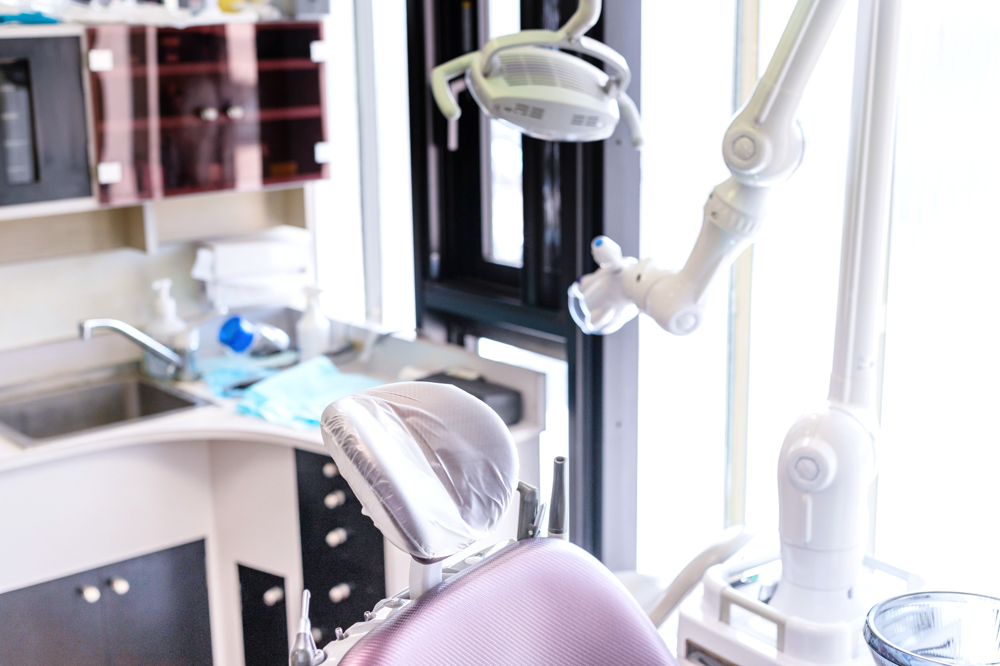

一般歯科・虫歯治療
虫歯治療から定期検診まで、お口の健康をトータルサポート
土日診療
当日予約OK
痛みを抑えた治療

一般歯科の詳しい診療内容

虫歯治療
-
C0・C1（初期虫歯）
経過観察・生活指導
-
C2（中程度虫歯）
コンポジットレジン充填・インレー
-
C3（重度虫歯）
根管治療・クラウン修復
-
C4（抜歯が必要な状態）
抜歯・インプラント・義歯検討


治療回数の目安
軽度の虫歯
1〜2回
中程度の虫歯
2〜4回
根管治療が必要
平均3〜6回


虫歯治療の流れ
当院では、患者様が安心して治療を受けられるよう、丁寧な説明と段階的な治療を心がけています
↓
初診・カウンセリング

- 問診・症状の詳しいヒアリング
- お口の中の状態を丁寧にチェック
- 痛みがある場合は応急処置
- 治療に対するご希望・不安の確認
痛みが強い場合は当日に応急処置を行います
↓
精密検査・診断

- デジタルレントゲン撮影
- 歯周病検査（必要に応じて）
- CT撮影（必要に応じて）
見えない部分の虫歯も詳しく診断
↓
治療計画の説明・同意
- 検査結果の詳しい説明
- 治療方法の選択肢をご提示
- 治療期間・回数・費用の説明
- 患者様のご希望に合わせた治療計画
なんでも質問してください！
↓
虫歯治療の実施

- 局所麻酔を実施
- 虫歯部分を丁寧に除去
- コンポジットレジン充填またはインレー
- 噛み合わせの調整・研磨
痛みを最小限に抑えた優しい治療
↓
治療後の確認・指導

- 治療箇所の状態確認
- 術後の注意事項の説明
- ホームケアの指導
- 次回予約（必要に応じて）
術後の不安があればいつでもご連絡
定期メンテナンス
頻度：3〜6ヶ月に1回
- 治療した歯の状態チェック
- 新しい虫歯がないか確認
- プロフェッショナルクリーニング
再発防止で長期的な口腔健康を維持
一般歯科治療のご相談・ご予約
虫歯や歯の痛みでお困りの方、定期検診をご希望の方は
お気軽にお電話でご相談ください
📞 026-248-1391
🕐 土日も診療中（平日土9:30-18:30 / 日9:30-18:00）